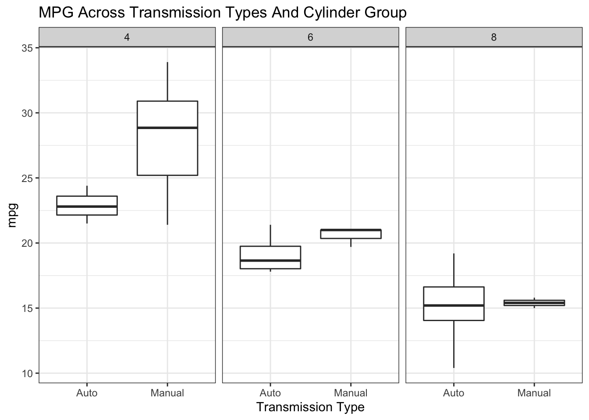
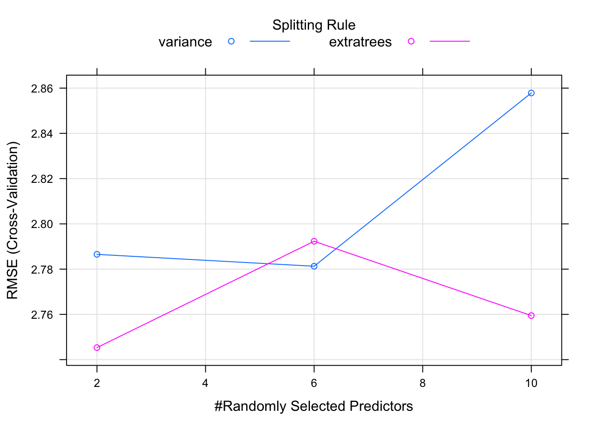
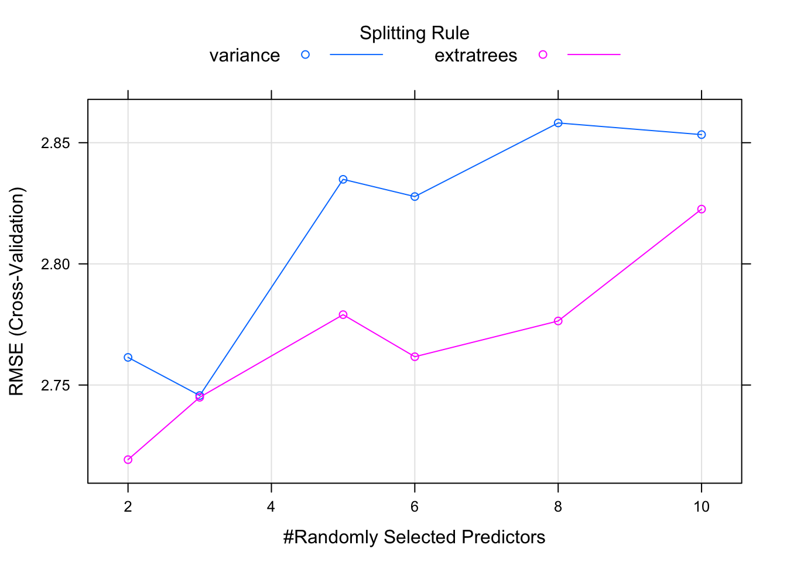

Chapter 7 Picking The Best Model
This is arguably one of the best features of the caret package as it helps us execute any number of models and then assess their performance on new data. Let’s look at our models thus far. In fact, it’s so easy to generate them with caret, we’ll just make them here again. Let’s set a common trainControl list. We’ll use the Train and Test sets from above.
my_ctrl <- trainControl(
method = "cv",
number = 3
)Now let’s build a model using three different methods. We’ll use the set.seed function to make sure that the underlying data used to train the models are the same. This allows for a better comparison.
set.seed(127) # For reproducibility
mod_lm <- train(mpg ~ .,
data=Train,
method = "lm",
trControl = my_ctrl)
set.seed(127)
mod_rf <- train(mpg ~ .,
data=Train,
method = "rf",
trControl = my_ctrl)
set.seed(127)
mod_ranger <- train(mpg ~ .,
data=Train,
method = "ranger",
trControl = my_ctrl)# Look at the results of the hyperparameter tuning
plot(mod_rf)
#
plot(mod_ranger)
7.1 Using the resamples() function
Now, here comes the “magic”. Because we built three different modeling objects on the same data set, we can now use the resamples function to collect, analyze, and visualize a set of results. This is pretty powerful.
results <- resamples(list(lm=mod_lm,rf=mod_rf,ranger=mod_ranger))
summary(results)##
## Call:
## summary.resamples(object = results)
##
## Models: lm, rf, ranger
## Number of resamples: 3
##
## MAE
## Min. 1st Qu. Median Mean 3rd Qu. Max. NA's
## lm 2.718249 3.344975 3.971702 3.763169 4.285630 4.599558 0
## rf 1.870911 1.971330 2.071748 2.157564 2.300890 2.530033 0
## ranger 1.615309 1.774449 1.933589 2.041555 2.254678 2.575767 0
##
## RMSE
## Min. 1st Qu. Median Mean 3rd Qu. Max. NA's
## lm 3.820721 4.586191 5.351662 4.981069 5.561243 5.770825 0
## rf 2.206249 2.428879 2.651510 2.804444 3.103541 3.555572 0
## ranger 2.077763 2.339982 2.602202 2.772274 3.119529 3.636856 0
##
## Rsquared
## Min. 1st Qu. Median Mean 3rd Qu. Max. NA's
## lm 0.4034764 0.4810678 0.5586592 0.6112736 0.7151722 0.8716853 0
## rf 0.7998902 0.8424308 0.8849715 0.8800726 0.9201638 0.9553560 0
## ranger 0.7927814 0.8507347 0.9086881 0.8803748 0.9241714 0.9396548 0bwplot(results)
dotplot(results)
7.2 Model Performance
Of course, we can now use the Test data frame to see how the RMSE looks on the holdout data frame.
compute_rmse(predict(mod_lm,Test),Test$mpg)## [1] 3.209825compute_rmse(predict(mod_rf,Test),Test$mpg)## [1] 3.060878compute_rmse(predict(mod_ranger,Test),Test$mpg)## [1] 3.193888Another way to look at these models is to use the diff function.
(difs <- diff(results))##
## Call:
## diff.resamples(x = results)
##
## Models: lm, rf, ranger
## Metrics: MAE, RMSE, Rsquared
## Number of differences: 3
## p-value adjustment: bonferroni# Get the summary
summary(difs)##
## Call:
## summary.diff.resamples(object = difs)
##
## p-value adjustment: bonferroni
## Upper diagonal: estimates of the difference
## Lower diagonal: p-value for H0: difference = 0
##
## MAE
## lm rf ranger
## lm 1.606 1.722
## rf 0.4658 0.116
## ranger 0.4878 0.9506
##
## RMSE
## lm rf ranger
## lm 2.17663 2.20880
## rf 0.4752 0.03217
## ranger 0.5092 1.0000
##
## Rsquared
## lm rf ranger
## lm -0.2687989 -0.2691011
## rf 0.5102 -0.0003022
## ranger 0.4389 1.0000compare_models(mod_lm,mod_rf)##
## One Sample t-test
##
## data: x
## t = 2.2036, df = 2, p-value = 0.1584
## alternative hypothesis: true mean is not equal to 0
## 95 percent confidence interval:
## -2.073439 6.426690
## sample estimates:
## mean of x
## 2.176626compare_models(mod_ranger,mod_lm)##
## One Sample t-test
##
## data: x
## t = -2.1067, df = 2, p-value = 0.1697
## alternative hypothesis: true mean is not equal to 0
## 95 percent confidence interval:
## -6.719990 2.302399
## sample estimates:
## mean of x
## -2.208795